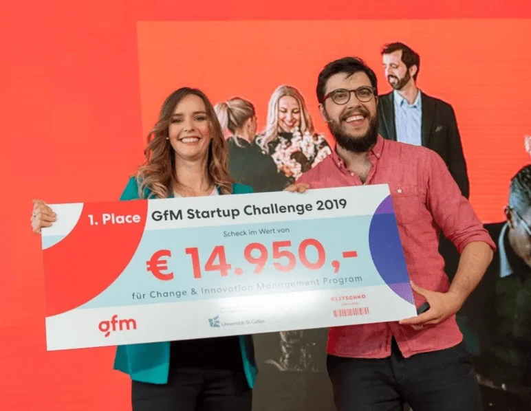

The 29th GfM Trend Conference was held on 3rd April. During the conference,
startups had the chance to pitch their ideas.
qiio was one of the three startups to pitch in front of all guests from different industries. Thanks to the
support from all audiences, qiio was the winner! We look forward to the coaching section with Klitschko
Ventures.